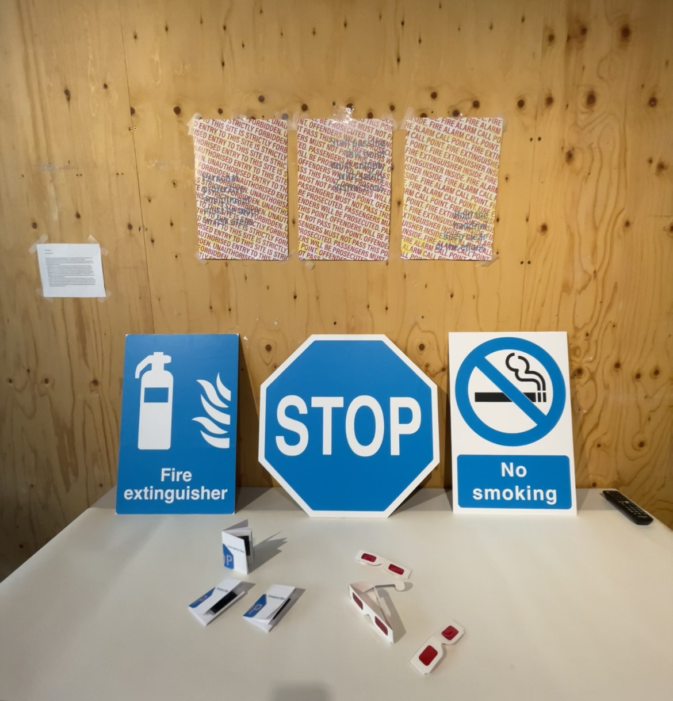
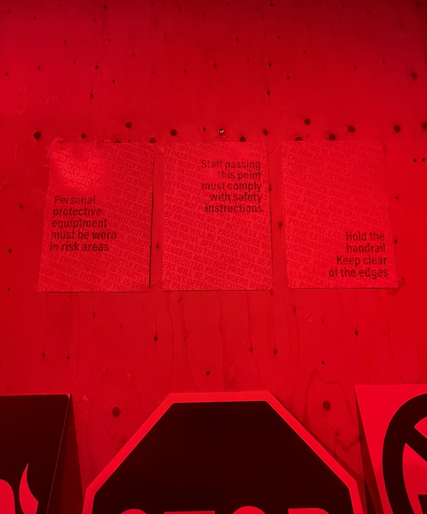
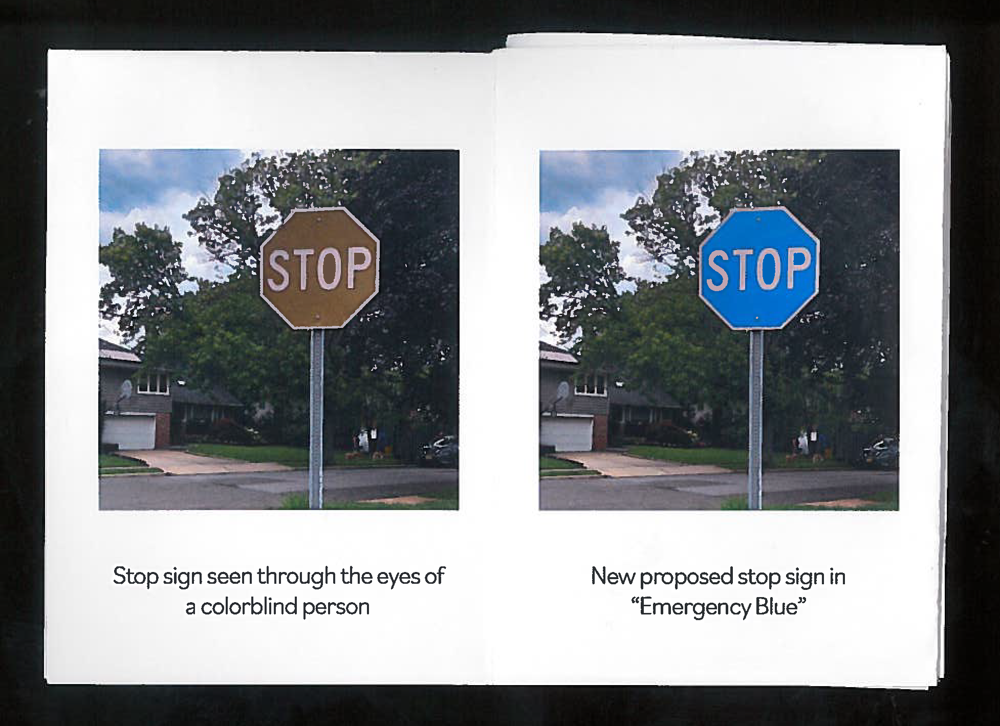
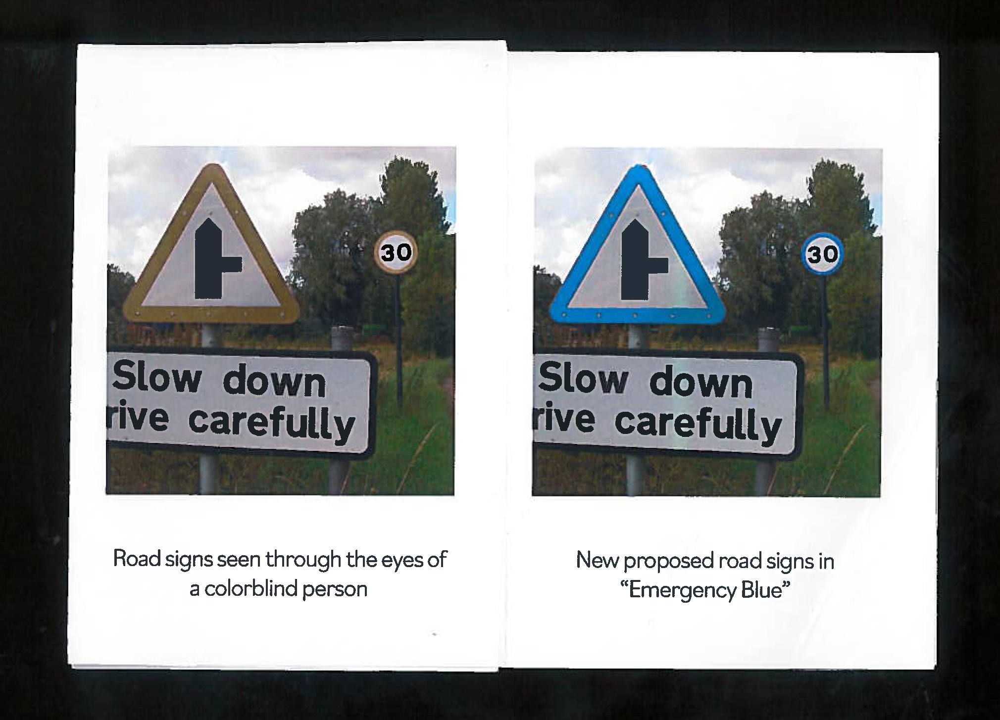
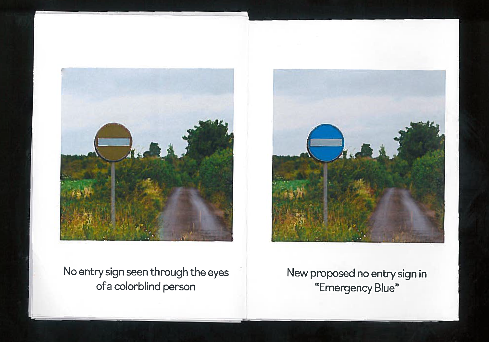
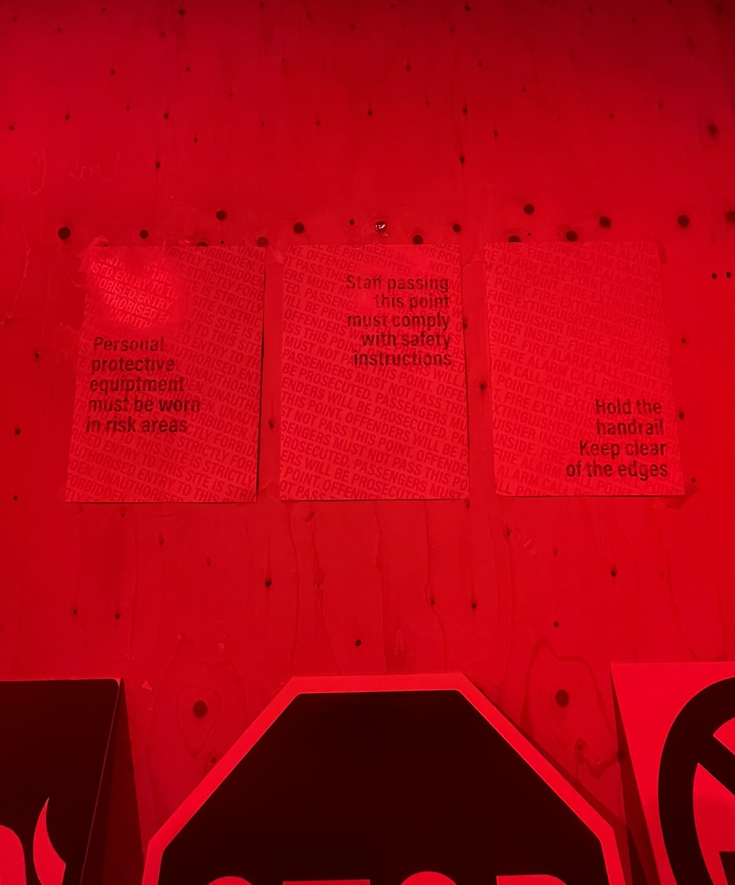
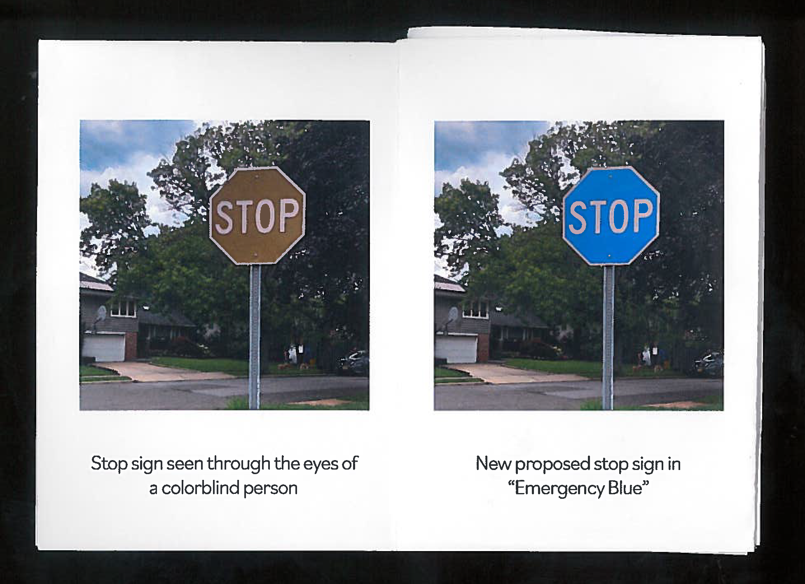
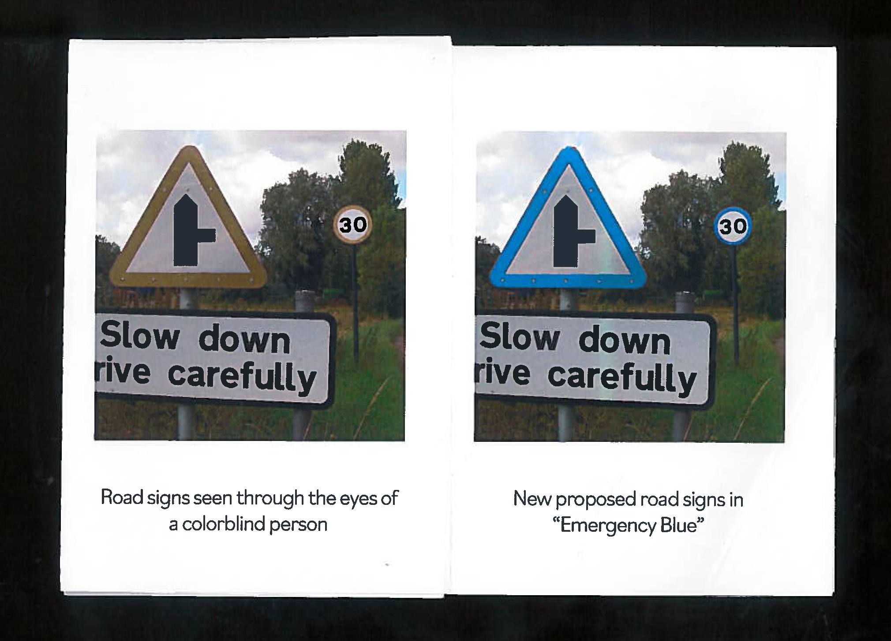
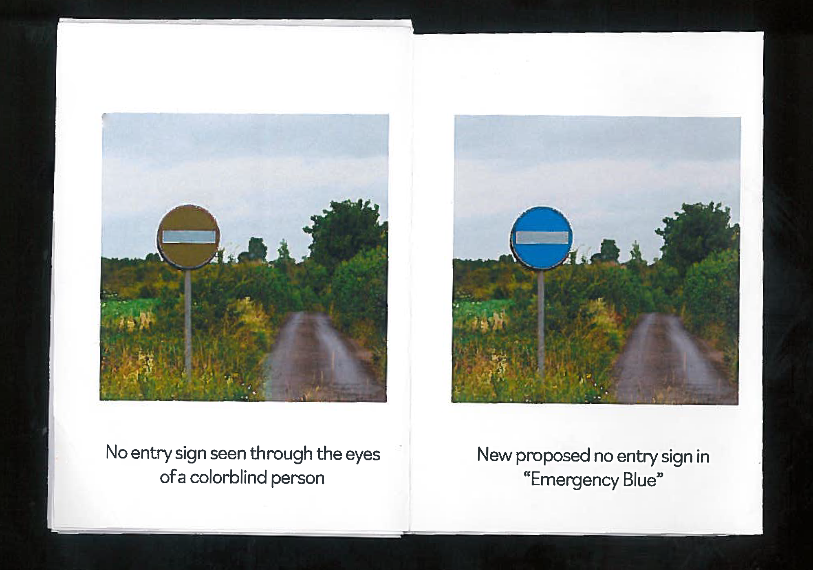
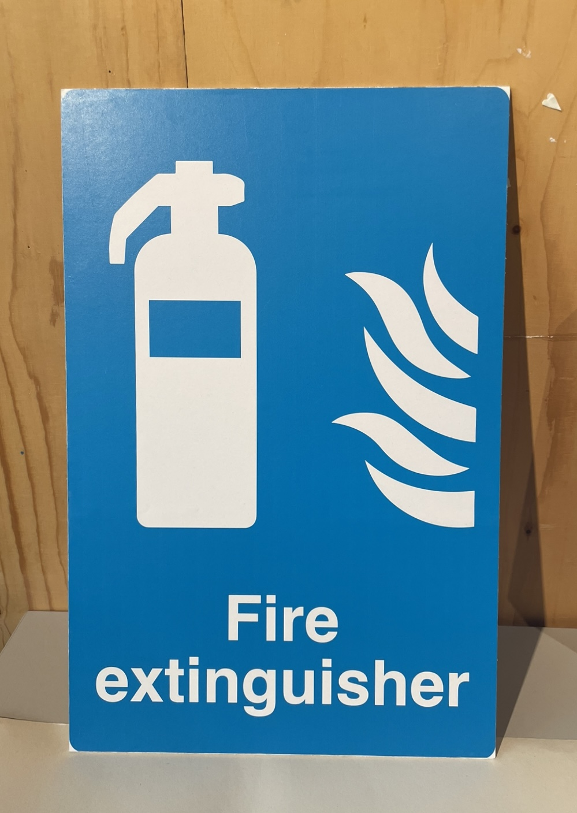

Emergency Blue
I've created a psychogeographic map that navigates London through the lens of someone who was colorblind. In order to avoid low confidence or fear of uncertainty in states of emergencies, I believe the color blue should be the new color of emergency so that more important information stands out to a wider audience than red does.











